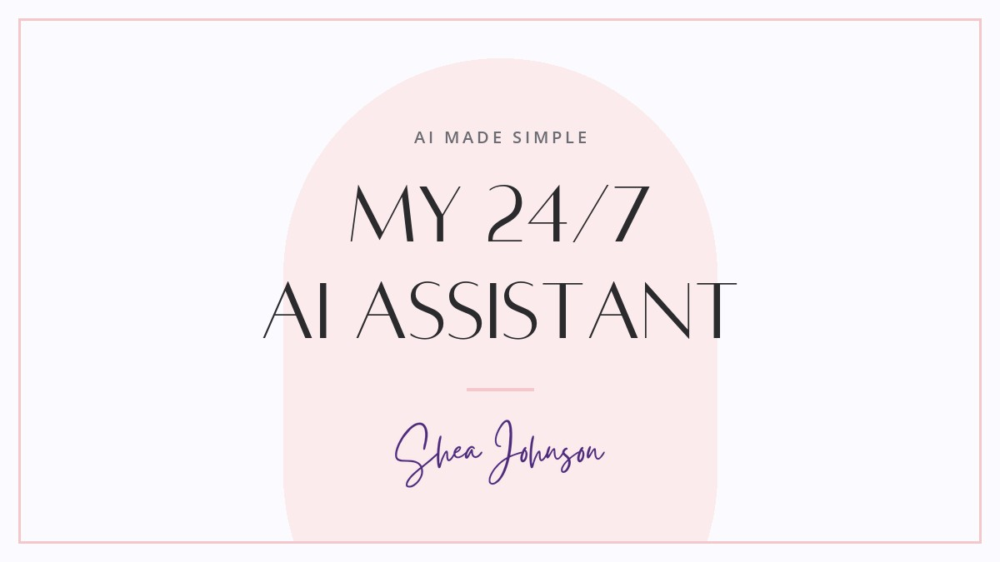

Update: My Mac Mini is resting for now, and it's coming back soon.
It's 4:55 AM.
I'm staring at a screen I never thought I'd understand…
And my autonomous AI agent just messaged me on Telegram.
She's finally up and running on the Mac Mini in my office.
Let me start from the beginning.
I just learned how to set up autonomous AI agents — essentially virtual employees that could work 24/7 around the clock.
Several days ago, I would have never touched the "Terminal" on my MacBook Air.
A little black box that has all the code lines in it.
Well, yeah.
Months ago I downloaded an AI assistant onto my desktop.
I wanted to clean up my file folders.
I remember trying to activate that feature and it didn't work that time so I gave up.
But I wish I never did that — and I know better than to do that because that's just the exact thing and the exact problem that keeps people from learning and moving forward.
But something pulled me back.
I just remember wanting to try again —
Now I am inside of my Terminal, in my MacBook Air mainframe, and I feel like I have been coding and doing this for years.
And it has literally only been about two weeks.
I've downloaded programs. I've copied and pasted code. I've gone into other websites. I've installed tools I'd never even heard of.
And now I know how to train and build bots.
And with my bots, I'm going to be able to build out teams and departments for each business that I own.
My first project right now?
Training a bot to be my executive assistant. I call it "Project Kelsey."
I already created her persona. I've already started mapping out the workflows and the way things will go.
And on top of her…
I've built out an advisory board with complete character profiles — the same way you would if you were writing a book.
Because for me it needs to make sense.
I don't want to talk to a generic bot.
I want bots who are going to say at the end of our board meeting where they're going for Christmas this year with the family or on a cruise for spring break with the kids.
I care about them already.
And I think that's what makes technology fun.
In fact, all it does is bring me back to when I was a kid.
The Sims game.
I would go to Best Buy, buy every expansion pack and play on my computer all day and night.
Until I could no longer stay awake, fall asleep, just to wake up and do it all over again the next day.
I remember building all those mansions. I remember building all those lives and living through them.
This started around 13 years old and went on until I was about 21, until I had to start spending my time elsewhere.
I had to leave the job in the Sims, and get one in the real world.
Still…
Building these bots?
It's nostalgic for me.
Brings back childhood memories.
These memories… resurfacing my love for technology.
When I created the personas, I put in certain details — how I want my executive assistant to request vacation time periodically and how I want her to have a lunch break.
I described her personality to a tee.
I gave my advisors families.
Some of them are married.
Some of them have children.
Some of them only have one child or two.
I said to my AI assistant, "I want to create these personas and I want them to be the archetype of their field. What kind of home? What kind of personality? What kind of life does that person typically have?"
And I built out characters. Just like playing the Sims back in the day.
Now imagine this.
You have three companies and they all have an advisory board and they all have the HR team and they all have the social media team and they all have the finance team — and all of these teams are running off of one device sitting on your desk.
Can they totally replace a human being? No.
Am I still testing and trying all of this out? Of course.
But the amazing things I've done with my AI assistant — is mind-blowing.
I'm a part of the spirit that drives those developers to put out open-source software so that people like me can experience it. So that people like me can build something meaningful with it.
And I'm doing the same. I want to share this. I want to make it accessible and I want to make it easy for people.
Because everyone deserves to live out their highest potential.
When you came into existence and you opened your eyes, you entered a reality where that was possible.
I stand on that. I believe in that. And I'm a part of that movement.
So cheers to you.
Now… let me tell you what actually happened.
I purchased the Mac Mini about four days before I ever opened the box. It sat there, untouched.
Because I'm a research kind of person and I wanted to make sure I didn't need to return it.
The setup process actually started about two weeks ago. I was researching as much as I could — reading, watching, asking questions, testing things on my MacBook Air, learning the Terminal for the first time. Making sure I understood what I was getting into before I committed.
Two weeks of preparation. And only when I was confident — I broke the seal.
Day one. 5:30 PM.
I unboxed the Mac Mini, plugged it into my smart TV, connected the mouse, keyboard, and started setting everything up.
I was downloading programs, configuring settings, copying and pasting code into the Terminal…
And I did not stop until 6 AM the next morning. Twelve and a half hours straight.
And then — I got locked out. Everything had to be erased and reinstalled.
All of it.
Gone.
I'm not going to lie — that moment almost broke me.
Day two.
I had to go to Micro Center again. Now, only running off of five hours of sleep within the last 48 hours.
Mind you, I live an hour away and this was my third time there.
And the store didn't have one of the items I needed — an HDMI dummy plug — so I had to order that off Amazon.
I drank a cup of coffee knowing I was running on fumes.
I honestly thought I was going to pass out and just do it tomorrow.
But at 10:30 PM, I sat back down in front of the same Mac Mini that was already plugged in and waiting — and reinstalled everything from scratch.
Becoming more and more familiar with words like Python, Node and Git…
I also asked my AI assistant to please teach me things — I really did learn as I went along.
And at 4:55 AM…
After 12 more hours of installing software, verifying every tool, configuring the server, and troubleshooting errors…
I can confidently and proudly announce that my autonomous AI agent is fully functioning.
Like the internet promised.
But I didn't stop there.
Once the server was running and the core software was installed, I kept going.
I set up my AI agent platform — the orchestration engine that manages the bot, her skills, her memory, and her connections to the outside world.
Then I set up Telegram. This allows me to chat and make requests through a conversation.
I installed every skill I wanted — image generation, PDF processing, speech-to-text, summarization…
I created an iCloud account and signed it into the Mac Mini so my agent could access native Apple apps — Notes, Reminders, Calendar. I went through every permission screen, allowing access one by one.
I'm an Apple ecosystem person, so this was gold for me.
I set up the Google Workspace connections so my agent could work with Gmail, Google Drive, Google Calendar, and Google Docs.
And let me be honest — there was a lot of troubleshooting.
Back and forth. Errors. Fixes. More errors. More fixes.
But at the end of the day, my agent was able to successfully use both Google Workspace and iCloud native applications on the Mac Mini.
I tested every single default skill that came with the platform.
I verified every connection was working properly.
And most importantly — I confirmed the server stays on.
It doesn't sleep. It doesn't shut down. My agent is running 24/7, and I can actively chat with her from my phone at any time.
I'll be honest — I also spent about three hours trying to set up iMessage so my agent could message me natively through my iPhone.
But I gave up on it.
Sometimes that's the right call. Telegram is already configured, already working, already built out. If that's the tradeoff — using Telegram instead of iMessage — I'm willing to deal with it. Not every battle is worth fighting when the war is already being won.
Where I am right now as I write this?
The server is live. The skills all work. The bot is chatting with me on Telegram.
My next steps are to finish training my agent on her full identity and personality — the soul documents, the memory, the character I built for her. I wanted to make sure everything was stable first before I gave her a soul.
And then I'm loading all of the knowledge and training documents onto an external drive — and making sure my agent can access that drive for all her reference materials.
I'm still going. I'm still building. I'm still learning.
But the foundation is solid.
If you are not tech-savvy, you can totally do this setup with patience, determination and a positive attitude.
No one held my hand or gave me guidance throughout this process.
This was all 100% research and using my AI assistant to help me.
What I Learned
The Terminal isn't scary. It's just a conversation in a different language. And my AI assistant translates for you once installed.
Once installed, I stopped typing commands. I just started talking.
"Install this." "Fix that." "Check if everything is working."
And it did it.
There was troubleshooting. There were errors. There were moments I wanted to quit. But I kept going.
And now I have an AI agent running on a server in my home, accessible from my phone, connected to Google Workspace and iCloud, with skills for image generation, document processing, speech-to-text, and more.
If I can do this, you can too.
Want the step-by-step guide I wrote from all of this? It’s in my shop. mssheajohnson.com/shop
Until next time — go be a powerhouse.